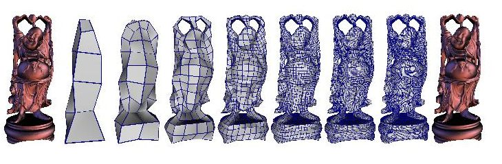

Hybrid Meshes
Igor Guskov
Andrei Khodakovsky
Peter Schröder
Wim Sweldens

Abstract: Hybrid meshes are a novel multiresolution mesh
structure which combines the flexibility of irregular and the
simplicity of (semi-)regular meshes. We show how to construct hybrid
meshes using both regular refinement to build smooth patches and
irregular operations to allow topology changes. We provide a user
driven procedure for remeshing scanned geometry with hybrid
meshes. Several examples and applications are included.
Status:
Submitted, January 2001.
Dates:
|
January 2001:
|
Submitted & posted.
|
Files:
PDF v3 with low res (144dpi) and
compressed images (600K).
PDF v3 with high res (600dpi) images (Caveat:
20M).
Copyright © 2001 Igor Guskov, Andrei Khodakovsky, Wim Sweldens, Peter Schröder.